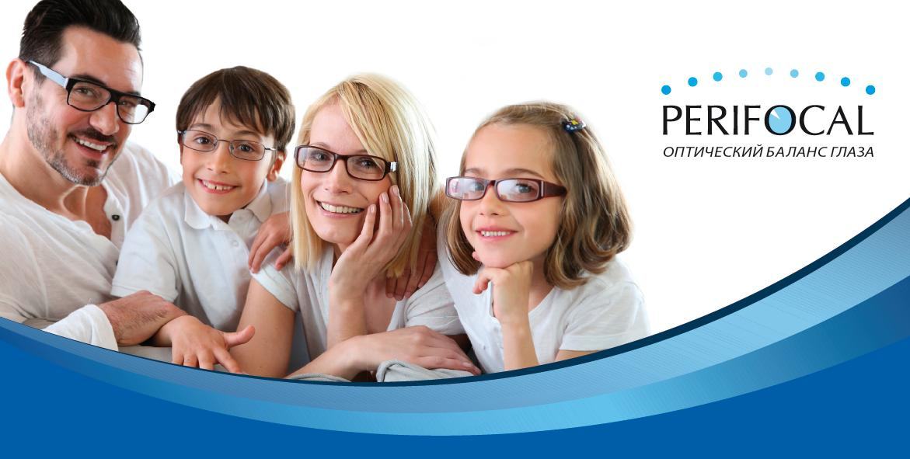

2014-02-01

20 февраля 2014г. в 14.00, в Москве (Россия) пройдет конференция "Линзы с горизонтальной прогрессией «Perifocal» и «Anlauf»: современная стратегия оптической коррекции зрения".
Информационный партнер www.organum-visus.com
ПРОГРАММА
14:00 – 14:20
Оптический дизайн линз «Perifocal» и «Anlauf»
Хосе Алонсе (профессор, заведующий кафедрой Мадридского университета, Испания)
14:20 – 14:40
Роль периферического дефокуса в развитии миопии и возможность влияния на него при использовании линзы «Perifocal»
Тарутта Е.П. (профессор, д.м.н., руководитель отдела патологии рефракции, бинокулярного зрения и офтальмоэргономики ФГБУ «МНИИ ГБ им. Гельмгольца» Минздрава России)
14:40 – 15:00
Линза «Perifocal» - новый способ очковой коррекции и контроля прогрессирования близорукости у детей путем воздействия на периферическую рефракцию
Ибатулин Р.А. (к.м.н., директор Центра зрения АртОптика, Москва)
Кофе-брейк

15:20 – 15:40
Линза «Anlauf» - новый способ профилактики и лечения функциональных нарушений аккомодации
Корнюшина Т.А. (д.б.н., старший научный сотрудник, МНТК «Микрохирургия глаза», Москва)
15:40 – 15:55
Значение коррекции периферической рефракции при возрастных заболеваниях глаза
Лоскутов И.А. (д.м.н., руководитель центра микрохирургии глаза НУЗ «Дорожная клиническая больница им Н. А. Семашко», Москва)
15:55 – 16:10
Технические характеристики линзы «Perifocal» и «Anlauf»
Ковычев А.С. (зам. директора по ОКР ООО «Перифокал», резидент Фонда «Сколково», Москва)
Обсуждение, ответы на вопросы.

Конференция проходит в рамках 14-ой международной специализированной выставки «MIOF – 2014».
Место проведения: МВЦ Крокус Экспо Пав.No 3 Зал No20 этаж No4
Фуршет: МВЦ Крокус Экспо Пав.No 3 этаж No2.